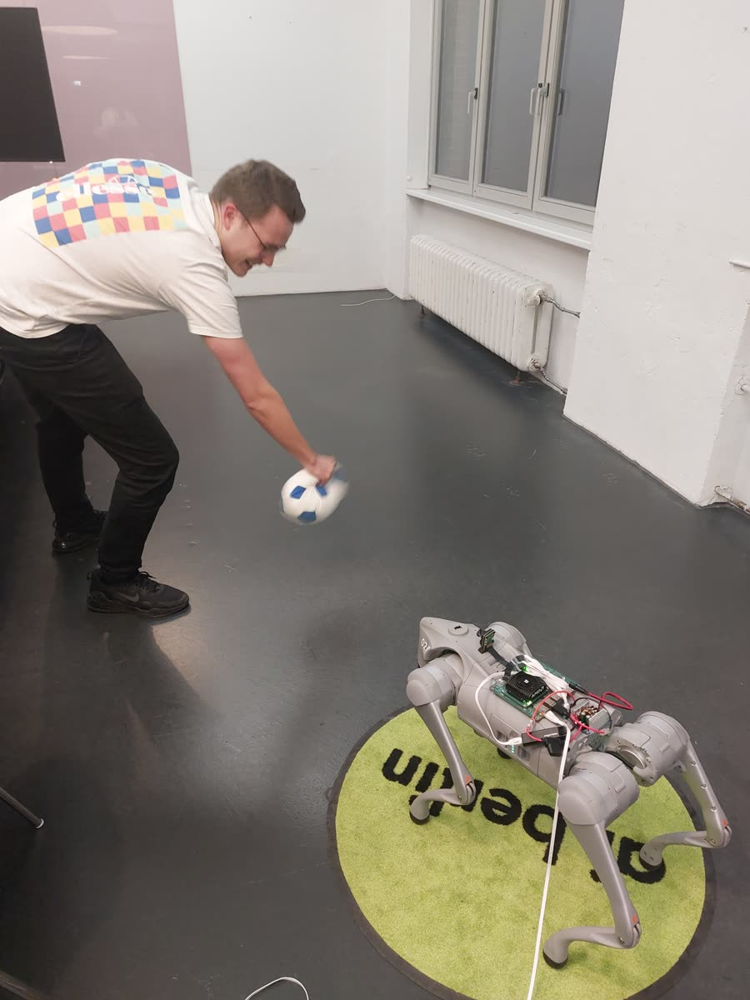
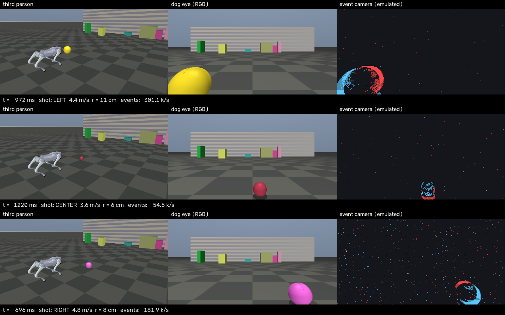

Naturally playful: a robot dog that watches a ball
An event camera on the Go2 sees a ball move. A small spiking neural network on the Kria KV260's FPGA
says where it is: one of six zones (upper or lower × left, middle or right) or none. The dog turns its
trunk towards that zone. We got there in three steps: everything in simulation, then the real camera driving the
simulated dog, then the real dog.

Step 1 · Everything in simulation
The robot and the camera were only there for the weekend. The simulator let us build the whole loop before: ROS 2 topics, the behavior node with its safety limits, the sport-mode commands, the dashboard. On the day only the boxes changed, not the topics between them.
pixi run -e ros ros-sim # camera, network, behavior, robot: all simulated pixi run -e ros ros-web # the dashboard, http://localhost:8080
Step 2 · The real event camera drives the simulated dog
Camera, FPGA, decision and behavior all run on the Kria. Only the robot is still simulated: the requests go over the Ethernet cable to MuJoCo on the laptop. To get here the board's input had to match training exactly (what we fixed).
ssh -t root@192.168.77.1 /opt/reflex/run.sh robot:=sim model:=ball_v3 pixi run -e ros ros-robot-sim behavior:=false dds_interface:=enp8s0 pixi run -e ros ros-web
Step 3 · The real Go2

robot:=real sends the same requests to the Go2's sport mode instead of the simulator. The behavior
node starts disabled and only logs what it would send; enabled:=true is passed on purpose, with
someone holding the Unitree remote.
ssh -t root@192.168.77.1 /opt/reflex/run.sh robot:=real model:=ball_v3 # logs only ssh -t root@192.168.77.1 /opt/reflex/run.sh robot:=real model:=ball_v3 enabled:=true # moves
What it is and is not: the dog turns its trunk towards a ball held and moved close to the camera. ball_v3 was trained on big, close, fast balls; no accuracy has been measured on the robot.
One pipeline, four swappable boxes
Every box talks to the next through a ROS 2 topic, so each one can be a simulated, a stand-in or a real version without touching the others. Click a box.
The dashboard

pixi run -e ros ros-web: the dog, the camera picture with the zone grid, the decision and the
spikes per zone, in the browser at http://localhost:8080, next to any launcher.Two loops around the pipeline
gen-data · capture.recordview-datatrain · reflex.river.trainspleat-bundle · river-tools deployros-sim · ros-events-sim · run.shros-sim · ros-robot-sim · Go2Where the code lives
| Folder | What is in it |
|---|---|
reflex/events/ | Event format (t in µs, x, y, p), the camera emulator, representations (windows → tensors and images) |
reflex/sim/ | MuJoCo scene: standing Go2, ball launcher, head camera. Optional park scenery and optional walking policy |
reflex/data/ | Simulated episodes (threats and hard negatives), windowing, dataset generation, recorded-session builder |
reflex/models/snn.py | The spiking network (26.5k parameters, plain PyTorch, kept portable for RIVERLib) |
reflex/runtime/ | Detectors, FPGA readouts (zones_readout, zone_vote), the FPGA's integer arithmetic on the PC (river_net), reflex state machine, follow / look controller, sport-mode command table, simulated sport mode |
reflex/river/ | riverops training of the target-zone SNN (zones3): auto-labels for real takes, synthetic data, review sheets |
reflex/deploy/ | spleat_bundle.py: a riverops export → the files the FPGA server needs |
Training/ | The teammates' ball networks (U-Nets, the zone classifier ball_v3) with int8 quantization-aware training |
capture/ | Recording real event-camera takes with labels, replay, relabelling (no ROS) |
models/ | Exported networks and FPGA firmware, each with a PROVENANCE.md |
ros2_ws/src/reflex_msgs | Messages: EventWindow, ReflexDecision, Target |
ros2_ws/src/reflex_ros | Thin ROS 2 nodes and launch files. Logic stays in reflex/, unit-tested without ROS |
scripts/kria/, tools/ | Cross-compile and deploy to the board, run.sh; board probes, replays into the FPGA, emulation checks |
What is real: the event camera (about 100 recorded takes, and live into the FPGA), two networks on the FPGA, and the Go2 turning towards a ball with the whole pipeline on the Kria (22 Nov). What is not measured: the accuracy of the live decisions, on the bench or on the robot. The rest of this site's numbers are from simulation.
The simulator
MuJoCo stands in for two things at once: the event camera (a camera on the dog's head plus an emulator that turns frames into events) and the robot (a Go2 that answers sport-mode requests). It exists to generate training data and to test the closed loop before the hardware is there.
A Go2 model holding a pose with a joint PD controller. By default it does not walk: reflexes are posture
changes (stand, crouch, lean left / right, sit, hello). reflex/sim/scene.py
Rolls balls at the dog (arriving left / center / right) and hard negatives: misses, balls crossing
sideways, slow balls, a walker, nothing at all. Every instant gets a label. reflex/data/episodes.py
Reduced ESIM / v2e model: a pixel fires ON or OFF when its log-intensity moves past a contrast threshold.
Parameters are randomized per episode so the network does not learn one sensor. reflex/events/emu.py
Translates each /api/sport/request to the closest of the simulator's poses, after a
configurable actuation delay (70 ms by default, measured on the real Go2). reflex/runtime/sim_sport.py
A policy trained with unitree_rl_mjlab (models/go2_walk.onnx) turns a Move into
steps. Off unless asked for: locomotion:=rl or pixi run drive.
reflex/sim/locomotion.py
Grass, path, trees, benches, houses, built from code. The default lab scene stays as it is.
scene:=park / --scene park. reflex/sim/scenery.py
Three ways to see it
The simulator alone, in a MuJoCo window or as a video file. Useful to look at the scene and the camera.
pixi run view # balls at a standing dog pixi run drive # walk it with the arrows pixi run sim # write out/demo.mp4
The simulator is one ROS node (go2_sim_bridge) among others. Add viewer:=true to
ros-sim to get its window.
pixi run -e ros ros-sim viewer:=true
Run the simulator headless and draw it in the browser. The dashboard only listens: it works next to any launcher, on this machine or another.
pixi run -e ros ros-sim # headless by default pixi run -e ros ros-web # http://localhost:8080
Keys in the MuJoCo window
| Action | 3D window (view, drive) | ROS terminal (ros-tricks) | In the simulator |
|---|---|---|---|
| Sit / stand up | Z / X | s / u | imitated |
| Hello (wave a paw) | H | h | imitated |
| Crouch, lean left / right | C, Q, E | – (reflexes, not tricks) | yes |
| Walk | arrows, A / D, SPACE stop (drive only) | – (use ros-teleop) | yes, walking policy |
| Stretch, dances, Heart … | – | t c 1 2 p e | ignored; real robot only |
| Damp (emergency, motors limp) | – | ! | motors limp |
Pictures


ros-tricks.

ROS 2 nodes and topics
Two packages: reflex_msgs (messages) and reflex_ros (nodes and launch
files). Two behaviors share the pipeline: the reflex (behavior) and following or looking at a ball
(follow, or behavior mode:=look on the board); run one at a time. Nodes are thin: each one wraps logic from reflex/. Click a topic to see who publishes and who
listens.
Which launcher starts which node
A launcher is a pixi run -e ros ros-… command that wraps ros2 launch reflex_ros ….launch.py.
c = only with camera:=true.
The messages
reflex_msgs/EventWindow on /reflex/events_window
# the last window_ms of events, binned. stamp = newest event std_msgs/Header header float32 window_ms uint32 n_bins # time steps uint32 channels # 2: OFF, ON uint32 height uint32 width uint8[] data # (n_bins, channels, height, width)
Today: 50 ms, 10 steps × 2 polarities × 45 × 80 cells = 72 000 bytes.
reflex_msgs/ReflexDecision on /reflex/decision
# one detector output per window. stamp copied from the window std_msgs/Header header string label # none / left / center / right (dog frame) float32 confidence # 0..1 string detector # snn / simple float32 inference_ms
The robot side gets unitree_api/msg/Request on /api/sport/request, Unitree's own message.
Every api_id lives in reflex/runtime/sport_api.py, each checked against Unitree's client.
reflex_msgs/Target on /reflex/target
# where the thing to follow is, in the image std_msgs/Header header float32 u # -1 left .. +1 right float32 v # -1 top .. +1 bottom float32 confidence # 0 = nothing seen string source
From the centroid tracker or the ball SNN, read by the follow node.
std_msgs/String on /durance/ball_zone
# the ball's zone from a six-zone network on the FPGA # reliable + transient-local, published only on change data: "upper_left" | "lower_middle" | ... | "none"
From fpga_perception on the board, or ball_zone_sim as a stand-in on the laptop.
Read by the behavior node's look mode, the follow node and the dashboard.
The graph, live
Camera side on a Kria, robot side on the PC, drawn by rqt_graph on 19 Nov 2026.

event_camera_webcam is the only source of event windows; the bridge only listens on /api/sport/request.
Looking inside
In a second terminal, pixi run -e ros ros-shell, then:
ros2 node list ros2 topic echo /reflex/decision --filter "m.label != 'none'" # only threats ros2 topic echo /reflex/events_window --no-arr # without the big array ros2 topic echo /api/sport/request # what goes to the dog ros2 topic hz /reflex/decision ros2 run rqt_image_view rqt_image_view /reflex/debug/events_image rqt_graph
Build a setup
Pick what plays each part. The page shows which node runs on which machine and the commands for each terminal. This is how nodes are swapped: the topics stay the same, only the program behind them changes.
Kria KV260: the whole pipeline on the board
On Durance's KV260 the camera, the network on the FPGA, the decision and the behavior node all run on
the board. Only the robot changes: robot:=sim sends the requests to the simulated dog on the laptop over
the cable, robot:=real to the Go2. Both ran on 22 Nov.
Kria KV260 runs
Durance's camera client, frames to TCP 3333
CHW → HWC, drops frames while the FPGA is busy, camera picture
our network: zones3 or ball_v3
spikes →
/reflex/decision, /durance/ball_zonereflex, or
mode:=look: trunk towards the zoneLaptop, robot:=sim
the simulated dog, robot only
camera picture, zone grid, spikes
Go2, robot:=real 22 Nov
USB-Ethernet adapter on the board, 192.168.123.x
Run it
/opt/reflexscripts/kria/deploy.sh
ssh root@192.168.77.1 despot_test_camera # must end in "Camera test successfully passed"The FPGA must already hold the model you name (FPGA & networks).
ssh -t root@192.168.77.1 /opt/reflex/run.sh robot:=sim model:=ball_v3
pixi run -e ros ros-robot-sim behavior:=false dds_interface:=enp8s0 viewer:=false
pixi run -e ros ros-web # http://localhost:8080The ball must be close to the camera and moved fast.
robot:=real the board's DDS leaves on the
Go2's adapter only, so the laptop sees nothing; only the board's behavior node can drive the dog. It starts disabled
and logs what it would send. Emergency stop and the Unitree remote in someone's hand first.
ssh -t root@192.168.77.1 /opt/reflex/run.sh robot:=real model:=ball_v3 # logs only ssh -t root@192.168.77.1 /opt/reflex/run.sh robot:=real model:=ball_v3 enabled:=true # moves, small angles
look_yaw:=0.15 look_pitch:=0.1); invert_pitch:=true if the upper row tilts the nose down.What run.sh does
- Runs
despot_test_cameraand stops unless it passes. - Moves the FPGA server to port 3334 so
camera_tapcan sit between despot and the server. - Sources ROS 2 Humble, Durance's overlay (for
unitree_api) and ours. - Checks that the model's output count matches the server's config: zones3 spikes are never read as ball_v3's.
- Adds the model's defaults from
models/<model>/run_args; command-line values win. - Starts
kria.launch.py:camera_tap, despot 3 s later,fpga_perception,behavior.
What had to be fixed on the board
The FPGA computes what the laptop's emulation computes only once all of these are right:
| Problem | Fix |
|---|---|
| despot sends the sum of each 4×4 block; zones3 was trained on the mean | scaling: 256 instead of 4096 in the server config |
| despot's noise filter removed events the training data had, and empty frames were skipped (15–30 frames/s, the watchdog fired) | noise filter off: 100 frames/s |
| the FPGA reads its input as HWC, despot sends CHW. Found by replaying recordings into the board | camera_tap reorders each frame |
| a slow FPGA held despot's stream back; decisions lagged more and more | camera_tap drops frames while 4 are unanswered |
| riverops exports signed weights; the board reads two's complement | spleat-bundle writes two's complement |
Before the hackathon: rehearsal with a webcam, 19 Nov 2026
On our own KV260 (Ubuntu) with a Logitech C920 standing in for the event camera, before Durance's board and camera were there.
| Check | Result |
|---|---|
| PC sees the board's nodes | yes, over CycloneDDS, ufw active, no extra rules |
/reflex/decision rate at the PC | 30.0 Hz, 1.9 kB/s |
| Newest frame on the Kria → request on the PC | 6–13 ms (clocks NTP-synchronized) |
| Simulated dog reacts to a hand in front of the webcam | yes: lean, crouch, back to stand |
| CPU on the Kria | camera node ≈ 70–85 % of one core, perception ≈ 15 % |
This tests plumbing (arm64 install, DDS across two machines, message sizes, latency), not detection quality: a 30 fps webcam is a poor event camera. Not done: the SNN on the board, anything with the FPGA.
Installing the webcam rehearsal (our own board)
NO_DOCKER=1 scripts/sync_kria.sh ubuntu@kria.local
curl -fsSL https://pixi.sh/install.sh | PIXI_NO_PATH_UPDATE=1 bash cd hacklab2-durance-go2 ~/.pixi/bin/pixi install -e kria --frozen # 4.5 min, 2.4 GB ~/.pixi/bin/pixi run --frozen -e kria kria-build # after each sync
ssh -t ubuntu@kria.local 'cd hacklab2-durance-go2 && ~/.pixi/bin/pixi run --frozen -e kria kria-camera'
Always pass --frozen on the board: its pixi is newer than the PC's and would rewrite the lock file.
scripts/sync_kria.sh ubuntu@kria.local
ssh -t ubuntu@kria.local docker run --rm -it --net=host \
--device /dev/video0 reflex-kriassh -t ubuntu@kria.local docker run --rm -it --net=host --device /dev/video0 reflex-kria \
ros2 launch reflex_ros camera.launch.py detector:=simple mirror:=true1.3 GB image. Devices and the FPGA must be passed in explicitly; a saved image works without internet.
Networking
- Everything uses ROS domain 0, so nothing has to be exported. On a network shared with other teams, pick a number and set
it everywhere:
export ROS_DOMAIN_ID=42on the PC,docker run -e ROS_DOMAIN_ID=42 …on the board. A mismatch gives no error, only silence. - If machines do not see each other: same
ROS_DOMAIN_ID, sameRMW_IMPLEMENTATION(CycloneDDS), same subnet, multicast allowed by switch and firewall. Check withros2 node liston both. - Whether RoboStack's CycloneDDS talks to the real Go2 is not verified.
docker/is the fallback.
Networks on the FPGA
Two of our networks run on the Kria's FPGA, fed by the real event camera. Both are shaped like Durance's example: a plain chain of convolutions and a 1×1 output. The U-Nets, with skips, upscaling and a spatial output, do not run.
| Network | In → out | Trained on | On the board |
|---|---|---|---|
zones3firmware job #44 | 2×80×80, 10 ms frames → none / left / center / right |
our 21 Nov real-camera takes, auto-labelled per frame | runs synthetic frames: every one answered, spikes match the emulation neuron by neuron.
Real camera: 100 frames/s, about 1.2 ms per frame, none with nothing in view, brief zone decisions with a ball |
ball_v3zone classifier | 2×320×320, 5 ms → 2×3 zones + none |
the teammates' dataset (big balls) | runs, in the loop output identical to the emulation on recorded live frames. Drives the look mode of the simulated dog and, on 22 Nov, of the real Go2. Reacts only to a ball close to the camera, moved fast |
ball_smallU-Net, job #35 | 320×320 → 9×80×80 heatmap | Tübingen event-camera ball dataset | hangs the FPGA one inference, then nothing. Durance's example runs on the same board, so it is the architecture |
ballfull U-Net | 1×320×320 → 9×80×80 | same | no firmware failed place-and-route twice; runs on the PC in the FPGA's integer arithmetic (detector:=ball) |
No accuracy has been measured for the live decisions of either network. zones3's validation figure (81 % balanced accuracy, 38 % false triggers) is from the same room and optimistic.
From spikes to a decision
The server sends one spike count per output neuron per frame. fpga_perception sums each neuron over the
last frames and takes the largest; a zone must beat none by a margin. For the six zones the winner is
voted and held for 0.5 s, because the network fires in bursts of 0.1–0.2 s, too short for a trunk gesture.
| zones3 | ball_v3 | |
|---|---|---|
| frames per decision | 20 (10 ms each) | 4 |
margin over none | 0 | −10: any zone spike wins (none fires every frame) |
| hold | – | 0.5 s |
| behavior | reflex | mode:=look: column → Euler yaw, row → Euler pitch |
Putting a network on the FPGA
riveropsexport-ballspleat-bundleriversdk.devriver-tools deployspleat_poke · emulate_poke# 1-2. train with riverops, export the model graph and fixed-point parameters (writes PROVENANCE.md) pixi run --manifest-path tools/river/pixi.toml export-ball CKPT.pt models/NAME # 3. files for the board: two's-complement weights.txt, server config, camera config, deploy.yaml pixi run spleat-bundle MODEL.json PARAMS.json --firmware models/firmware/JOB --no-noise-filter # 4. firmware: submit the model JSON on riversdk.dev; one firmware serves any weights of that architecture # 5. deploy, then on the board: systemctl restart spleat-xmutil-loadapp spleat-server pixi run --manifest-path tools/river/pixi.toml -e tools river-tools deploy out/spleat/MODEL/deploy.yaml root@192.168.77.1 # 6. compare the board with the emulation before trusting anything live pixi run spleat-read --zones-dir models/zones3
Full reference: docs/deploy-fpga.md. Board runs and their logs: docs/fpga-zones3-2026-11-22.md,
docs/fpga-ball-zones-v3-2026-11-22.md, docs/fpga-run-2026-11-22.md.
Data and training
Two tracks. The reflex SNN learns on simulated episodes, with hard negatives so it cannot learn “many events = threat”. The networks for the FPGA are trained with Durance's riverops on real event-camera takes.
Real event camera: about 100 labelled takes, 21 Nov
Durance's river-tools starts the GenX320 on the Kria over SSH; our recorder tells you what to do for each
take and saves it with its label as one HDF5 file. Camera on a stand, not on the robot. No ROS, no pixi: a Python
environment with river-tools and h5py.

capture.record during a take: live events, what to do, SPACE to start and end.
capture.replay: a take with its label, marks and event rate.ssh root@192.168.77.1 despot_test_camera # after every boot python -m capture.record --session sun_cross3 --plan cross # plans: follow, cross, center python -m capture.replay data/river_samples/sun_cross3 python -m capture.relabel data/river_samples/sun_cross3 19 40 --note "ball came from the right" python -m capture.summarize --plan-session sun_cross3
Training for the FPGA (riverops)
reflex/river/ is Durance's Motion Buddy notebook adapted to none / left / center / right.
Real takes are auto-labelled per 10 ms frame by a calibrated tracker, with per-take overrides and a review sheet.
That is how zones3 was trained on the cross and none takes. The teammates' ball
networks live in Training/, trained with int8 quantization-aware training. Details:
docs/river-training.md; how they reach the board: FPGA & networks.
Simulation and webcam takes (reflex SNN)
pixi run gen-data # 2000 episodes → data/synth (~10 min, 63 MB) pixi run train # → out/models/snn.pt (~90 s) pixi run eval # SNN vs no-learning detector, held-out windows pixi run view-data data/synth --label left
# a camera source must be running (ros-camera, kria-camera, ros-sim) pixi run -e ros ros-record session:=sat_am # l c r n start, SPACE = ball arrived pixi run build-real data/real/* # → data/real_ds pixi run view-data data/real_ds pixi run finetune-real --val-session sat_pm # → out/models/snn_real.pt
Then run the camera side with detector:=snn model:=out/models/snn_real.pt.
Episode kinds
| Kind | What happens | Label |
|---|---|---|
approach | ball rolled at the dog, arrives left / center / right | that side |
miss | ball rolled past the dog, well to one side | none |
crossing | ball crosses the view sideways without approaching | none |
slow | ball creeps towards the dog too slowly to be a threat | none |
walker | a person-sized shape walks across | none |
idle | only sensor noise and camera shake | none |
The network
Small convolutional spiking network, 26.5k parameters, plain PyTorch, trained with surrogate gradients. Every choice is a config field because Durance's RIVERLib supported layers are not known yet:
- leaky integrate-and-fire neurons, reset by subtraction, fixed threshold
- convolution and linear layers only; no normalization, no pooling inside
- binary spike input; readout keeps a coarse left / right grid, then a non-spiking leaky integrator
The reflex state machine
The same for both detectors, in simulation and on the robot. While reacting or resting, decisions are ignored: the dog's own motion floods the camera with events. Hard limits in the behavior node: lean ≤ 0.5 rad, sideways speed ≤ 0.5 m/s, a watchdog when decisions stop.
Commands
Everything starts with pixi run, from the repository folder. -e ros selects
the environment with ROS 2; ROS arguments go after the command as name:=value. Stop anything with
Ctrl+C.
When something does not work
| Symptom | Cause |
|---|---|
| The dog reacts to nothing, odd scores, absurd latency | Two launchers at once share topics. Stop one, or isolate one: ROS_DOMAIN_ID=7 pixi run -e ros ros-sim |
ros2: command not found | Not inside ros-shell; on the Kria use ~/.pixi/bin/pixi and -e kria |
cannot open camera 0 | No camera on that machine, or another number: device:=2 |
| The dog does not react | No camera source running; simple detector calibrated while something moved (/reflex/recalibrate); enabled:=false |
| The web dashboard does not move | The simulator was started with a plain command (view / drive); use a ros- one |
| Dashboard on port 8081 | Another dashboard is still running on 8080 |
| Keys do nothing | The terminal (ros-teleop, ros-tricks, ros-record) or the 3D window must have focus |
| Nodes on two machines do not see each other | Different network or ROS_DOMAIN_ID; ros2 node list on both |
Status and results
What works, what is simulated, what is still open. Sunday 22 Nov 2026.
| Part | State |
|---|---|
| Event-camera emulator, MuJoCo scene with ball launcher and head camera | working, tested |
| Synthetic dataset with hard negatives | working, tested |
| SNN (26.5k parameters) and training | trains in ~90 s 81 % window accuracy on held-out simulated episodes |
| No-learning detector and reflex state machine | working, tested |
Sport-mode api_id table, checked against Unitree's client | checked by hand on the real Go2 21 Nov: signs, posture mode, 70 ms delay |
| Closed loop over ROS 2 in simulation | working |
| Camera side on a Kria KV260, webcam as stand-in, PC as robot | working 30 Hz, 6–13 ms to the PC |
| Recording over ROS, labelling, fine-tuning (reflex SNN) | working with webcam takes |
Real event camera: guided recording with labels, replay, HDF5 (capture/) | working about 100 takes on 21 Nov, camera on a stand |
riverops training on real takes, auto-labels per frame (reflex/river/) | working zones3: 81 % balanced accuracy, 38 % false triggers on validation (same room, optimistic) |
| zones3 on the FPGA (firmware job #44) | runs matches the emulation; real camera at 100 frames/s; live accuracy not measured |
| ball_v3 on the FPGA, six zones | runs, in the loop turns the trunk of the simulated dog and of the real Go2; only big, close, fast balls; accuracy not measured |
| Ball U-Nets on the FPGA | hang the FPGA / no firmware narrowed to the architecture, not to a layer |
Whole pipeline on the Kria (run.sh, kria.launch.py) | runs drives the simulated dog over the cable, and the real Go2 with the board on its back |
| Follow / look controller, target contract, centroid tracker | simulation unit-tested; look mode in the loop with ball_v3; yaw and pitch not checked on the real Go2 |
Recordings or the live camera driving the simulated dog (ros-events-sim) | simulation sources tested without ROS; launch not yet run under ROS |
Optional walking, keyboard and /cmd_vel driving, simulated drone flights | simulation |
| Our nodes driving the real Go2 | done, 22 Nov look mode with ball_v3: the trunk follows a ball held close to the camera (videos on the overview). Not measured |
The real Go2, by hand, 21 Nov 2026
Commands sent with ros2 topic pub from Durance's Kria; none of our nodes ran against the robot.
| What | Result |
|---|---|
| Hello, Sit, StopMove, BalanceStand, StandUp, StandDown, Move, Euler, Pose | work; the robot answers on /api/sport/response |
| Move signs | +x forward, +y the dog's left, +z turns left: as the code assumed |
| Euler roll sign | +x lowers the right side: the code assumed the opposite; fixed |
| Euler needs posture mode | accepted but ignored until Pose true; the simulator now models this |
| Lean (Pose, Euler x=+0.3) | starts after 70 ms, 90 % at 270 ms, reaches 8°; the trunk rolls in place (0.6 cm) |
| Sidestep (Move y=+0.3, 1 s) | starts after ~50 ms, about 20 cm. A lean is not a dodge: use reaction:=move |
Per window, simulated (4128 held-out windows)
| No-learning detector | SNN | |
|---|---|---|
| Missed threats | 93.5 % | 16.4 % |
| Wrong side | 1.8 % | 8.8 % |
| False alarms, all negatives | 1.1 % | 14.2 % |
With the simulated camera shake no event-count threshold works: low enough to catch balls, it fires on everything. The shake amplitude is a guess until the real dog is measured.
Closed loop over ROS 2, simulated (12 shots: 9 balls, 3 hard negatives)
| Detector | Actuation delay | Correct | Missed | Wrong side | False triggers | Median margin |
|---|---|---|---|---|---|---|
| SNN | 200 ms | 9 / 9 | 0 | 0 | 2 / 3 | 318 ms |
| SNN | 300 ms | 9 / 9 | 0 | 0 | 2 / 3 | 188 ms |
| SNN | 400 ms | 6 / 9 | 3 | 0 | 2 / 3 | 142 ms |
| No-learning | 300 ms | 2 / 9 | 6 | 1 | 3 / 3 | 112 ms |
Twelve shots is a smoke test, not a benchmark. These runs used a 300 ms actuation delay, a guess; the default is now 70 ms, measured on the real Go2. Latency inside the simulation runs on simulated time and is not a latency claim.
Open
- No accuracy figure for the live decisions of either FPGA network, on the bench or on the robot.
- Make the dog follow and walk towards a moving ball, not only look at it.
- ball_v3 needs fine-tuning on our camera's data (small balls at the real distance); same architecture, so only the weights change.
- Image orientation through despot is unchecked.
- The U-Net hang on the FPGA is narrowed to its architecture, not to a layer.